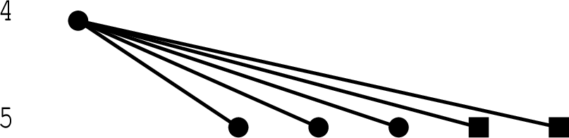

This chapter describes all the main methods and functions of this package.
Let G be a finite p-group given by a consistent polycyclic presentation as Pc group.
‣ LCSFactorTypes( G ) | ( function ) |
returns the abelian invariants of the lower central series factors of G.
‣ LCSFactorSizes( G ) | ( function ) |
returns the orders of the lower central series factors of G.
‣ WidthPGroup( G ) | ( function ) |
returns the width of G.
‣ SubgroupRank( G ) | ( function ) |
returns the (subgroup-)rank of G.
‣ Obliquity( G ) | ( function ) |
returns the obliquity of G.
‣ HasObliquityZero( G ) | ( function ) |
checks whether G has obliquity 0 and returns true or false.
Let G(p,rwo) denote the full tree of all finite p-groups with rank rwo[1], width rwo[2] and obliquity rwo[3]. This tree can be finite or infinite; if it is infinite, then the infinite pro-p-groups of the considered rank, width and obliquity specify infinite subtrees of the full tree. The groups not contained in such an infinite subtree are called sporadic.
‣ GroupsByRankWidthObliquity( p, d, rwo, roots, limit ) | ( function ) |
determines all p-groups G with G/Φ(G) of order p^d and rank, width and obliquity as prescribed in rwo up to order limit. Here p and d are integers, rwo is a list of three integers and limit is an integer.
The parameter roots is a list of groups described by their ids with respect to the small groups library. The descendants of the groups described in roots are excluded from the output of this function. This option can be used to prune the tree of groups determined by this function.
If there are only finitely many sporadic p-groups with given rank, width and obliquity, then this function can be used to generate them; in this case roots must contain a complete list of all ids of roots of infinite subtrees and limit can be set to infinity.
‣ BranchRWO( G, i, rwo ) | ( function ) |
for a stable quotient (see [ER10]) G of a pro-p-group of rank rwo[1], width rwo[2] and obliquity rwo[3], this function returns the i-th branch of its corresponding tree. The structure of the tree is encoded in a list. If one of the global parameters CHECK_RANK or CHECK_OBLIQUITY is set to false, then checking the corresponding invariant is omitted and hence a potentially larger tree is returned.
The user is advised not to perform any other computations using ANUPQ or the pq-program while using this or the following function, because such computations will be terminated.
‣ BoundedDescendantsRWO( G, i, c, rwo ) | ( function ) |
returns the tree of all descendants of G/γ_i(G) of rank rwo[1], width rwo[2], obliquity rwo[3] and class at most c.
‣ DrawBranch( branch ) | ( function ) |
if the package is run under XGAP, then this function can be used to draw a branch as output by the above two functions in the case of width 2. The user may wish to improve the quality of the output by modifying the file gap/xbranch.gi.
Vertices drawn on the same level correspond to groups of the same class. If G is a descendant of H in the branch, then G is drawn as a filled circle if | G| = | H| p and as a solid box if | G| = | H| p^2.
The package also provides finite quotients of a number of infinite pro-p-groups with finite rank, width and obliquity. Throughout the section, p is an odd prime.
‣ ProPSylowGroupOfPSL( d, p, n ) | ( function ) |
returns the quotient of the Sylow pro-p-subgroup of PSL_d(ℚ_p) modulo the matrices which are congruent to the identity modulo p^n.
‣ ProPSylowGroupOfPSF( p, n ) | ( function ) |
Let L be the simple Lie algebra of dimension 3 over ℚ_p which is not isomorphic to sl_2(ℚ_p). This function returns a finite quotient of the Sylow pro-p-subgroup of its automorphism group. The parameter n specifies how large this quotient is.
In [KLP97], a library of maximal pro-p-groups with finite rank, width and obliquity corresponding to the Lie algebras of small dimension is provided. Here, we provide a library of large quotients of these groups for some of the Lie algebras of type sl_d(K), where K is a finite extension of ℚ_p. These groups have been determined using the programs described in [KLP97]. To be precise, depending on the group, it may be necessary to pass to the quotient by one of the last non-trivial terms of the lower central series in order to obtain a quotient of the respective pro-p-group.
‣ ProPQuotient( p, dim, deg, no ) | ( function ) |
returns a finite group corresponding to the maximal pro-p-group G with Lie algebra sl_dim(K), where K is a field of degree deg over ℚ_p. The parameter no specifies the number of the group in our database.
When run under XGAP, the following code constructs and draws the branch with root G/γ_5(G) in the graph of finite 5-groups of rank 3, width 2 and obliquity 0, where G is the Sylow pro-p-subgroup of Aut(sl_2(ℚ_5)).
gap> g := ProPSylowGroupOfPSL(2,5,6); Pcp-group with orders [ 5, 5, 5, 5, 5, 5, 5, 5, 5, 5, 5, 5, 5, 5, 5, 5 ] gap> branch := BranchRWO(g,5,[3,2,0]);; ConstructBranch: root-p-class: 4 Constructed 3 1-step descendants. ConstructBranch: root-p-class: 5 Constructed 0 1-step descendants. Constructed 0 2-step descendants. ConstructBranch: root-p-class: 5 Constructed 0 1-step descendants. Constructed 0 2-step descendants. ConstructBranch: root-p-class: 5 Constructed 0 1-step descendants. Constructed 0 2-step descendants. Constructed 3 2-step descendants. ConstructBranch: root-p-class: 5 Constructed 0 1-step descendants. Constructed 0 2-step descendants. ConstructBranch: root-p-class: 5 Constructed 0 1-step descendants. Constructed 0 2-step descendants. gap> DrawBranch(branch);
A window with the following graph should appear.

generated by GAPDoc2HTML